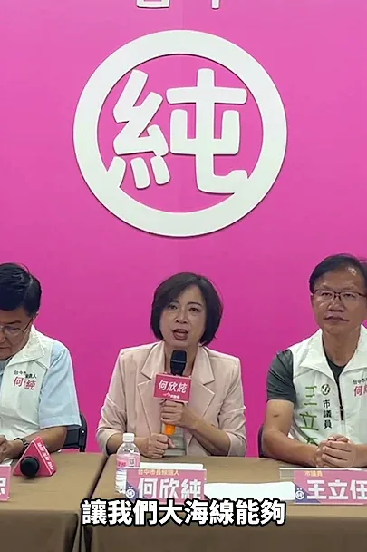

何欣純a-chun.tw
青年圓夢、政府當後盾！何欣純推青年局、AI 研習所助就業創業 台中市長候選人、立法委員何欣純今（15） […] 〈 青年圓夢、政府當後盾！何欣純推青年局、AI 研習所助就業創業 〉這篇文章最早發佈於《 何欣純官方網站｜2026 台中市長候選人 》。
Posts
青年圓夢、政府當後盾！何欣純推青年局、AI 研習所助就業創業 台中市長候選人、立法委員何欣純今（15） […] 〈 青年圓夢、政府當後盾！何欣純推青年局、AI 研習所助就業創業 〉這篇文章最早發佈於《 何欣純官方網站｜2026 台中市長候選人 》。


@hammer__lee:「來！看這邊」，我把時間留給鏡頭，留給里長，為好友誼做見證。 今天我和新北市200多位里長，一起拍競選照，我遇到好多好朋友，也認識不少新朋友，我們都一起在努力向前走。 握拳、比讚、背靠背，或是人人都是花一朵，什麼姿勢我都OK，里長的活力，是我繼續拚的動力。 新莊中泰里長郭樹琳還特別帶了里民為我做的手工應援小物，上面有我、我的logo，原來就是用手搖旗縫製成的，有她的細心與貼心，讓我感到暖心。 新北29區，里長是我的貴人，他們是地方的眼與耳，哪條路壞了、哪盞路燈不亮，在第一現場紀錄社會變遷，提供市府好的建議，一起往對的方向前進。 我的筆記本裡，都是里長們的指教，非常榮幸能一起並肩拚戰，滿足地方的期盼，讓里民的日子過得順。 「吸氣、縮小腹、挺胸！」，我們里長聯誼會長一個一個都在旁邊盯場，我哪敢鬆懈，成果出來，每個人都像一朵花，都綻放得最開。 咱堂堂新北市，親像花當開。


✨小英總統來「亭妃競總」開箱！驚艷從來沒見過這麼有美感及設計感的競選總部！ 蔡英文總統今天來到陳亭妃競選總部，從打卡區到親自體驗AI動畫政見、當走進「妃熊幸福」專區，還大讚：「我全台跑透透，從沒看過這麼有美感、設計感的競選總部！」讓小英總統覺得最不可思議的就是「妃熊幸福」親子氣墊區 從台南400年的文化底蘊，到AI科技、農漁、觀光、福利與交通，再到可愛的妃妃泰迪熊，這裡不只是競選總部，更是陳亭妃心中「美學台南」的實踐。 歡迎大家來永康區水漾路520號，走一趟「台南妃熊幸福奇幻旅程」！ 開箱影片我們拭目以待👀
@a_chun1973:台中要改變，就交給何欣純！ 謝謝鄭麗君副院長的推薦與鼓勵 我會說到做到、兌現每一項政見，照顧每一位台中市民，也全力推動無人機與智慧產業發展。 讓產業升級、城市進步，讓台中再次起飛🚀

@prof.kochihen:日前，我特別拜訪知名音樂人，也是我的競選歌曲《世界高雄》製作人吳坤龍老師。 聊著聊著才發現，我們兩個其實有不少相同之處：同樣屬虎，也都曾站上金鐘獎的舞台。 我從教育、媒體走進公共服務；坤龍老師則從音樂出發，在高雄扎根37年。走上不同的人生道路，卻都相信一件事：好的作品需要時間累積，一座好的城市，也需要不斷創新、持續向前。 從廣播、廣告、布袋戲，到許多職棒的應援歌曲，像是近年大家耳熟能詳的《台灣尚勇》；老師一路把工作室留在高雄，更創下連續24年入圍廣播金鐘獎的紀錄，獲得15座金鐘獎肯定。 近年走進運動賽場，啦啦隊、球員應援曲，幾萬名球迷一起唱跳吶喊，早已成為大家熟悉的風景。這套充滿熱情與感染力的應援文化，坤龍老師正是重要的幕後推手之一。 這次，我很榮幸邀請坤龍老師，為我們打造競選歌曲。在他的精心製作下，《世界高雄》希望大家從旋律裡，聽見高雄的陽光、海港的開闊、這座城市的熱情；更希望把運動賽場上「有志一同」的精神展現出來。


@su.chiaohui:上個禮拜週末感謝萬里子弟 @william_chingte 賴清德總統邀請我和 @tsai_ingwen 小英總統 ，以及在地的 @easyhigh_dpp 張錦豪議員、@bihua_tw 蔡美華議員候選人一起到萬里龜吼走走～ 新北真的很美，我真的很希望可以把北海岸的美景、美食介紹給更多好朋友，希望新北成為台灣人安居樂業的首選，外國人一生必訪的城市。


從台北到東京，謝謝每一份跨海的支持。 謝謝日本後援會的朋友，持續關心台北，成為我的重要力量。 #台北順起來 #你的市長沈伯洋


廟口那卡西，下一站彌陀！ 今晚7點在彌陀區 #彌壽宮 (彌陀區中正西路11號)， 「樓頂揪樓下，作伙來聽歌！」 柯志恩 與 高雄市議員 #方信淵 #宋立彬 、參選人 #黃韻涵，邀請大家一起來聽歌聽講！ 同時別忘了！9月19日， 我們的第一場大型造勢， #大風起 ！ 在鳳山，與您不見不散！ 彌陀場（音樂會） 📍時間｜9月15日（二）晚上7點開始 📍地點｜彌陀區 #彌壽宮 (彌陀區中正西路11號) 📍主持人｜陳昭瑋 📍歌手｜江雲梅 📍二胡｜葉維仁 老師 📍與會來賓｜高雄市議員 #方信淵 #宋立彬 、參選人 #黃韻涵 ------ 大風起！鳳山大造勢 📍 捷運鳳山西站旁｜2號出口 ⏰ 9/19（六）15:00 活動入場｜15:30 正式開始

@schuanglawyer:時間有限，但想跑遍桃園、見到每一位市民朋友的心無限！ 昨晚趕到豐林里時，活動已經準備散場，但只要有機會見到大家，我就會全力衝刺。 我是黃世杰，我們一起打造活力、希望心桃園💖

#大風起，從鳳山開始！ 四年前，我從市場、廟口與街頭開始，一路走遍38區，傾聽無數市民朋友的心聲；我也在鳳山向鄉親許下承諾：我會留下來，和高雄站在一起。 現在，是時候將這些年累積的所有力量與感動，再一次集結起來！ 9月19日，這場選戰的第一場大型造勢，我們就從鳳山出發！ 這一天，我的競選總部主委 #王金平 院長、台北市長 #蔣萬安，以及大家非常期待的新北市長候選人 #李四川 「川伯」擔任助講嘉賓，與我們站在一起！ 📍 捷運鳳山西站旁｜2號出口 ⏰ 9/19（六）15:00 活動入場｜15:30 正式開始 大風起，志家人集結！ 我們站出來，有志一同，迎向勝利！ #夢想海港 #世界雄心

@hammer__lee:「歹勢啦，我無聲啊⋯」，第一次讓台下觀眾大笑，是因為我燒聲了。 工程人「憨慢」講話，所以我很用力，沒有技巧，沒有漂亮話，只想努力一字一句，告訴大家我對新北的構想，要帶鄉親走向何方。 今天好朋友替我在三重成立川友會，看到兩千多位鄉親到場替我加油，說實在，再怎麼沒有聲音，我也覺得歡心。 「新北市長李四川，1128投給他」我沒聲音，里長替我喊。 這份力氣我收下了，也會繼續拚下去。 非常多里長，以及三重農會理事長李志源、常務監事鄭俊麟和總幹事林宏記也來到現場相挺，這份感謝，我記在心裡。 未來，包括「軌道建設123」、「大漢溪縱貫線捷運」以及「蘆社大橋」，還有三重忠孝碼頭到大稻埕的跨河景觀橋，我都會一一來做。 三重的路，是我過去出的力。三重的橋，我未來加倍出力。

「來！看這邊」，我把時間留給鏡頭，留給里長，為好友誼做見證。 今天我和新北市200多位里長，一起拍競選照，我遇到好多好朋友，也認識不少新朋友，我們都一起在努力向前走。 握拳、比讚、背靠背，或是人人都是花一朵，什麼姿勢我都OK，里長的活力，是我繼續拚的動力。 新莊中泰里長郭樹琳還特別帶了里民為我做的手工應援小物，上面有我、我的logo，原來就是用手搖旗縫製成的，有她的細心與貼心，讓我感到暖心。 新北29區，里長是我的貴人，他們是地方的眼與耳，哪條路壞了、哪盞路燈不亮，在第一現場紀錄社會變遷，提供市府好的建議，一起往對的方向前進。 我的筆記本裡，都是里長們的指教，非常榮幸能一起並肩拚戰，滿足地方的期盼，讓里民的日子過得順。 「吸氣、縮小腹、挺胸！」，我們里長聯誼會長一個一個都在旁邊盯場，我哪敢鬆懈，成果出來，每個人都像一朵花，都綻放得最開。 咱堂堂新北市，親像花當開。

何欣純喊出「3個第一 1個大」台中要大升級💪


民主，是台灣走向世界最有力量的名片 🇹🇼 今天是 #國際民主日，今年也正好是 #民進黨創黨40週年。 40年前，許多民主前輩在威權體制下承受壓力，仍然勇敢站出來，爭取組黨、言論與選舉的自由。一路走來，台灣從威權走向民主，從爭取「能不能投票」，走到今天每個人都能用手中的選票，決定家鄉與國家的未來。 如今世界再次面臨民主與威權的拉鋸，台灣站在民主最前線，我們更清楚自由從來不是理所當然。守護民主，不只是守護我們現在的生活，更是要把「選擇」的權利，完整交到下一代手上。 我會帶著前輩給我的養分繼續向前，為高雄打拚，讓下一代擁有更自由、更進步，也更值得期待的未來。國際民主日，為台灣的民主驕傲。前輩走過的路，我們會繼續走下去，他們守下來的民主，我們會一代接一代，帶向更大的世界。

日前，我特別拜訪知名音樂人，也是我的競選歌曲《世界高雄》製作人 #吳坤龍 老師。 聊著聊著才發現，我們兩個其實有不少相同之處：同樣屬虎，也都曾站上金鐘獎的舞台。 我從教育、媒體走進公共服務；坤龍老師則從音樂出發，在高雄扎根37年。走上不同的人生道路，卻都相信一件事：好的作品需要時間累積，一座好的城市，也需要不斷創新、持續向前。 從廣播、廣告、布袋戲，到許多職棒的應援歌曲，像是近年大家耳熟能詳的《台灣尚勇》；老師一路把工作室留在高雄，更創下連續24年入圍廣播金鐘獎的紀錄，獲得15座金鐘獎肯定。 近年走進運動賽場，啦啦隊、球員應援曲，幾萬名球迷一起唱跳吶喊，早已成為大家熟悉的風景。這套充滿熱情與感染力的應援文化，坤龍老師正是重要的幕後推手之一。 這次，我很榮幸邀請坤龍老師，為我們打造競選歌曲。在他的精心製作下，《世界高雄》希望大家從旋律裡，聽見高雄的陽光、海港的開闊、這座城市的熱情；更希望把運動賽場上「有志一同」的精神展現出來。 他也跟我分享，這首歌的設計，就是希望讓每一位第一次聽到的人，都能很快聽懂、加入，最後一起唱、一起喊。 「從一首歌，變成一群人的共同記憶。」這句話，我很喜歡。 我希望打造的高雄也是如此。不只有硬體建設的累積，更是許多人的創意與共同記憶，一點一滴堆疊出來城市的文化。 高雄有很多像坤龍老師一樣，長年扎根在這裡、非常優秀，卻未必總是站在鎂光燈前的文化工作者。未來，我希望高雄不只是把人潮帶進來，更要把產業留下來、把人才留下來，讓高雄自己的創作者被更多人看見，甚至走向世界。 《世界高雄》是一首競選歌曲，更是一首我們寫給高雄的應援曲。 從夢想海港出發，帶著陽光與熱情。「做伙拚出咱的世界舞台！」 有志一同，我們一起為高雄加油，也一起讓高雄走向世界！

上個禮拜週末感謝萬里子弟 #賴清德 總統邀請我和 #蔡英文 小英總統 ，以及在地的 #張錦豪 議員、#蔡美華 議員候選人一起到萬里龜吼走走～ 新北真的很美，我真的很希望可以把北海岸的美景、美食介紹給更多好朋友，希望新北成為台灣人安居樂業的首選，外國人一生必訪的城市。

第一der海線 海線媳婦何欣純喊話！

@hammer__lee:說實在，音樂我不是專業。聽到要做一首競選主題曲，我心裡是打問號的：一首歌，講得完新北嗎？ 聽完我收回那句話。是年輕人的才華，替我把話唱完了。 這首歌裡沒有一句政見，但每一句都是新北人的日子。 「歐都拜歸工來來回回，為生活、為家庭、為理想」——這不是歌詞，這是新北人每天早上六點半就在做的事。 「有時存黑暗，看嘸著路」——這也不是歌詞，這是每一個在夜班、在工地、在市場、在店裡顧到打烊的人，都很熟的那種感覺。 最後那句「我毋驚，咱自己找出口」，我聽了大概三遍，後來自己就跟著哼了。 我做了四十年的工程，從三職等做起。我很清楚一件事：路不會自己出現，是有人先想，然後有人去做。 副歌那句「川好勢」，台語是「準備好」。這三個字剛好跟我借了一個字，我就把它聽成新北人在問我一句話： 你準備好了沒？ 我的回答很簡單：四十年的經驗，就是為了新北的這一刻。剩下的，咱作夥做。 勇敢想，把新北想得更大。勇敢做，把想的一件一件做完。

時間有限，但想跑遍桃園、見到每一位市民朋友的心無限！ 昨晚趕到豐林里時，活動已經準備散場，但只要有機會見到大家，我就會全力衝刺。 我是黃世杰，我們一起打造活力、希望心桃園💖

#大風起，從鳳山開始！ 四年前，我從市場、廟口與街頭開始，一路走遍38區，傾聽無數市民朋友的心聲；我也在鳳山向鄉親許下承諾：我會留下來，和高雄站在一起。 現在，是時候將這些年累積的所有力量與感動，再一次集結起來！ 9月19日，這場選戰的第一場大型造勢，我們就從鳳山出發！ 這一天，我的競選總部主委台灣公道伯 王金平院長、台北市長蔣萬安，以及大家非常期待的新北市長候選人 李四川Hammer Lee「川伯」擔任助講嘉賓，與我們站在一起！ 📍 捷運鳳山西站旁｜2號出口 ⏰ 9/19（六）15:00 活動入場｜15:30 正式開始 大風起，志家人集結！ 我們站出來，有志一同，迎向勝利！ #夢想海港 #世界雄心

「歹勢啦，我無聲啊⋯」，第一次讓台下觀眾大笑，是因為我燒聲了。 工程人「憨慢」講話，所以我很用力，沒有技巧，沒有漂亮話，只想努力一字一句，告訴大家我對新北的構想，要帶鄉親走向何方。 今天好朋友替我在三重成立川友會，看到兩千多位鄉親到場替我加油，說實在，再怎麼沒有聲音，我也覺得歡心。 「新北市長李四川，1128投給他」我沒聲音，里長替我喊。 這份力氣我收下了，也會繼續拚下去。 非常多里長，以及三重農會理事長李志源、常務監事鄭俊麟和總幹事林宏記也來到現場相挺，這份感謝，我記在心裡。 未來，包括「軌道建設123」、「大漢溪縱貫線捷運」以及「蘆社大橋」，還有三重忠孝碼頭到大稻埕的跨河景觀橋，我都會一一來做。 三重的路，是我過去出的力。三重的橋，我未來加倍出力。

@pumashen:拜會阿扁總統， 當然要加Line、打電話！ ⠀ 還好阿扁總統10點就被收手機， 時間會跟其邁市長錯開XD

台中要改變，就交給何欣純！💪 謝謝鄭麗君副院長的推薦與鼓勵❤️ 我會說到做到、兌現每一項政見，照顧每一位台中市民，也全力推動無人機與智慧產業發展。 讓產業升級、城市進步，讓台中再次起飛。

@chen_tingfei:今天競總來了一位大來賓！小英總統來開箱競總啦！👀💕 從戶外跑道、AI政見互動牆，到滿滿一整面的妃妃泰迪熊，今天帶小英總統把競選總部好好逛了一圈。 本來想說是請她來開箱，結果逛著逛著，我反而收到新任務了🤣 「以後當市長，台南生育率要拚六都第一！」 總統交代的任務，我收到了！ 未來我的目標不只是福利要六都齊，還要讓年輕人敢成家、願意留在台南、孩子安心長大，讓台南成為一座適合生活的城市。

大手小手一起畫，讓廟埕充滿色彩與歡笑聲！🎨 尹立 左營楠梓市議員參選人


From Taipei to Tokyo, thank you for every bit of support across the sea. Thank you to our friends...

台中要改變，就交給何欣純！ 謝謝鄭麗君副院長的推薦，我會信守政見承諾，照顧每位市民，大力推動無人機產業，讓台中再次起飛💪 #心存大台中 #市長換欣_台中創新

說實在，音樂我不是專業。聽到要做一首競選主題曲，我心裡是打問號的：一首歌，講得完新北嗎？ 聽完我收回那句話。是年輕人的才華，替我把話唱完了。 這首歌裡沒有一句政見，但每一句都是新北人的日子。 「歐都拜歸工來來回回，為生活、為家庭、為理想」——這不是歌詞，這是新北人每天早上六點半就在做的事。 「有時存黑暗，看嘸著路」——這也不是歌詞，這是每一個在夜班、在工地、在市場、在店裡顧到打烊的人，都很熟的那種感覺。 最後那句「我毋驚，咱自己找出口」，我聽了大概三遍，後來自己就跟著哼了。 我做了四十年的工程，從三職等做起。我很清楚一件事：路不會自己出現，是有人先想，然後有人去做。 副歌那句「川好勢」，台語是「準備好」。這三個字剛好跟我借了一個字，我就把它聽成新北人在問我一句話： 你準備好了沒？ 我的回答很簡單：四十年的經驗，就是為了新北的這一刻。剩下的，咱作夥做。 勇敢想，把新北想得更大。勇敢做，把想的一件一件做完。

時間有限，但想跑遍桃園、見到每一位市民朋友的心無限！ 昨晚趕到豐林里時，活動已經準備散場，但只要有機會見到大家，我就會全力衝刺。 我是黃世杰，我們一起打造活力、希望心桃園💖
霧峰行政中心落成、大里仍一片空地 何欣純：準市區格局推屯區大進擊 立法委員何欣純今（14）日出席霧峰區聯合 […] 〈 霧峰行政中心落成、大里仍一片空地 何欣純：準市區格局推屯區大進擊 〉這篇文章最早發佈於《 何欣純官方網站｜2026 台中市長候選人 》。